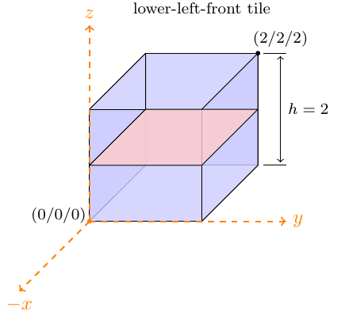

Terrain
The terrain class defines geometries of the worlds the players moves on. We have the following conventions for tiles and models:
-
+zis up -
-xis forward
A terrain is specified with two components. First we require one definition of a “tile” for every tile present in the terrain. Subsequently these tiles can be instantiated and positioned to represent worlds (best to use the in-browser editor). Both components are specified in JSON as shown in the corresponding sections.
Tiles
Tiles are squares defining the origin of the local coordinate system in the
lower left front of the tile and has an extension to [2, 2, 2]. A tile has
size [0, 2N^3).

Tile IDs are unique names used for referencing by tile instances. The model name
corresponds to a OBJ model to be found in the world directory of the
encounter.
tiles:
tile_name:
model : "model_name"
vertices : [-1,-1,0, -1,1,0, 1,-1,0, 1,1,0]
facesProject : [0,1,2, 1,3,2]
facesIntersect : []
bbox : {pmin:[-1,-1,-1], pmax:[1,1,1]}
Creating Tiles with Blender
TODO.
Tile Instances
Terrains are defined using the previously introduced tiles. Each tile instance has a unique identifier and references the tile name it represents. Position and rotation concertize the instance.
data:
0:
tile: "tile_name",
pos : [0,0,9],
rot : 0
1:
tile: "tile_name",
pos : [0,0,6],
rot : 0
2:
tile: "another_tile",
pos : [4,4,6],
rot : 0
All rotations are anticlock-wise and the rotation axis is the origin of the tile:
- 0: no rotation
- 1: rotated by 90 degrees
- 2: rotated by 180 degrees
- 3: rotated by 270 degrees
Movement and Terrain Positions
All WorldObjects are located at a TerrainPosition. Computing
getTerrainPosition(tile, local_x, local_y) :: TerrainPosition
Return the “global” terrain position corresponding to (local_x, local_y) in
the specified tile.
moveTowards(guid, velocity = 1.0, min_distance = 0.0) :: undefined
Convenient method for creatures to walk towards a player or position. TODO.
Loading a Terrain and Spawn Locations
In order to load terrain and define spawn location the encounter glue file has to implement the following two methods.
loadTerrain(instance) :: undefined
E.g., after
loadTerrain: (instance) ->
instance.createTerrain "DrEvilsLair"
the terrain specified in ‘DrEvilsLair.coffee’ is loaded and upon bootstrapping sent to all players.
getSpawnLoaction(instance, player, role) :: undefined
Method sets spawn location of player or role, e.g.,
getSpawnLocation: (instance, player, role) ->
return instance.terrain.getTerrainPosition 0, 0.5, 0.5
meaning all players (regardless of role and player) will spawn in tile 0 at
local coordinates (0.5, 0.5).